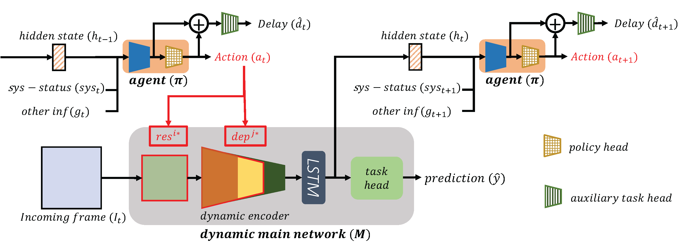

Foo Lin GengI'm currently a PhD student at Singapore University of Technology and Design (SUTD), and my research is supported by the President's Graduate Fellowship. My advisor is Prof. Liu Jun from the Information Systems and Design (ISTD) pillar. Prior to this, I obtained my Bachelor's Degree in Engineering Systems and Design (ESD), Summa Cum Laude (highest honors) from SUTD in 2019, where I also obtained the Keppel Award of Excellence in both 2018 and 2019, and the EY Business Analytics Award (awarded to top student in the business analytics track). My current research interests include video analysis, activity understanding, and dynamic neural networks. |
|

|
GradMDM: Adversarial Attack on Dynamic NetworksJianhong Pan (*), Lin Geng Foo (*), Qichen Zheng, Zhipeng Fan, Hossein Rahmani, Qiuhong Ke, Jun Liu IEEE Transactions on Pattern Analysis and Machine Intelligence (TPAMI), 2023 |
|  |
System-status-aware Adaptive Network for Online Streaming Video UnderstandingLin Geng Foo (*), Jia Gong (*), Zhipeng Fan, Jun Liu IEEE Conference on Computer Vision and Pattern Recognition (CVPR), 2023 |
DiffPose: Toward More Reliable 3D Pose EstimationJia Gong (*), Lin Geng Foo (*), Zhipeng Fan, Qiuhong Ke, Hossein Rahmani, Jun Liu IEEE Conference on Computer Vision and Pattern Recognition (CVPR), 2023 |
|
Token Boosting for Robust Self-Supervised Visual Transformer Pre-trainingTianjiao Li (*), Lin Geng Foo (*), Ping Hu, Xindi Shang, Hossein Rahmani, Zehuan Yuan, Jun Liu IEEE Conference on Computer Vision and Pattern Recognition (CVPR), 2023 |
|
ERA: Expert Retrieval and Assembly for Early Action PredictionLin Geng Foo (*), Tianjiao Li (*), Hossein Rahmani, Qiuhong Ke, Jun Liu European Conference on Computer Vision (ECCV), 2022 paper / poster / slides |
|
Dynamic Spatio-Temporal Specialization Learning for Fine-Grained Action RecognitionTianjiao Li (*), Lin Geng Foo (*), Qiuhong Ke, Hossein Rahmani, Anran Wang, Jinghua Wang, Jun Liu European Conference on Computer Vision (ECCV), 2022 paper / poster / slides |